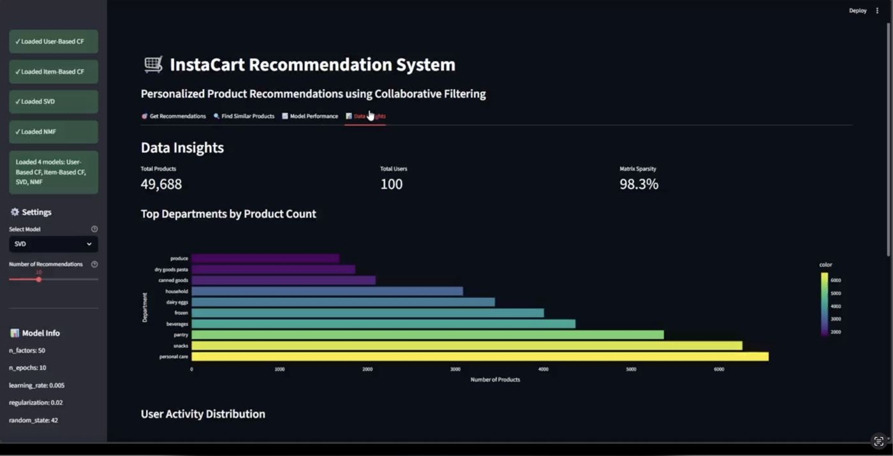
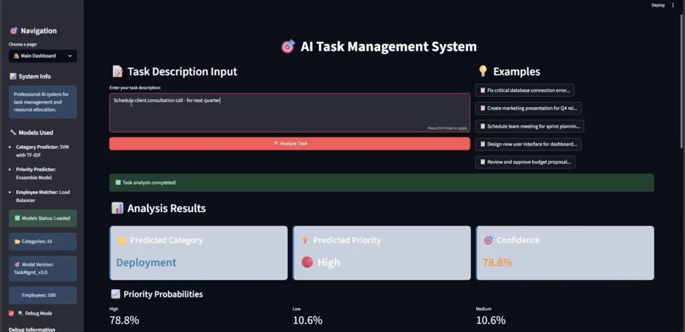
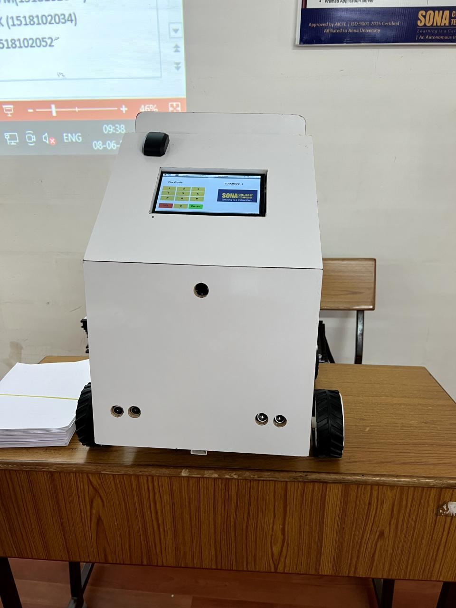
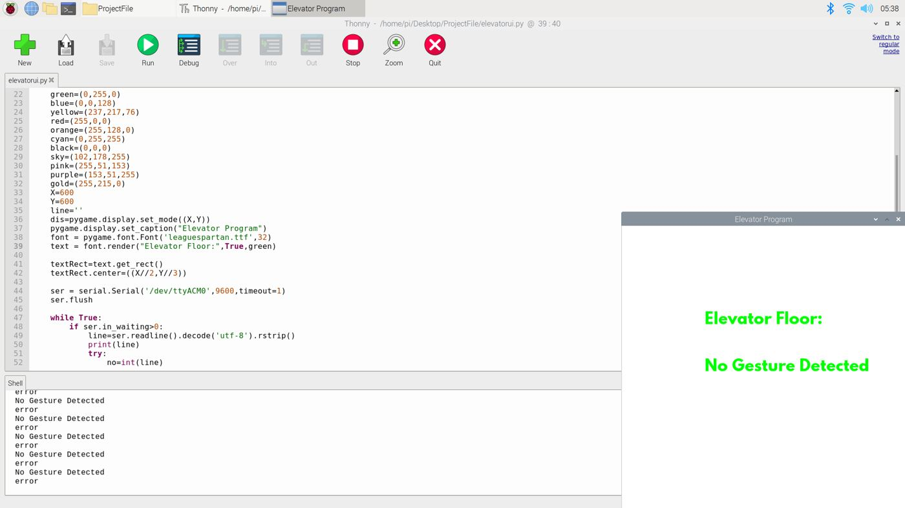
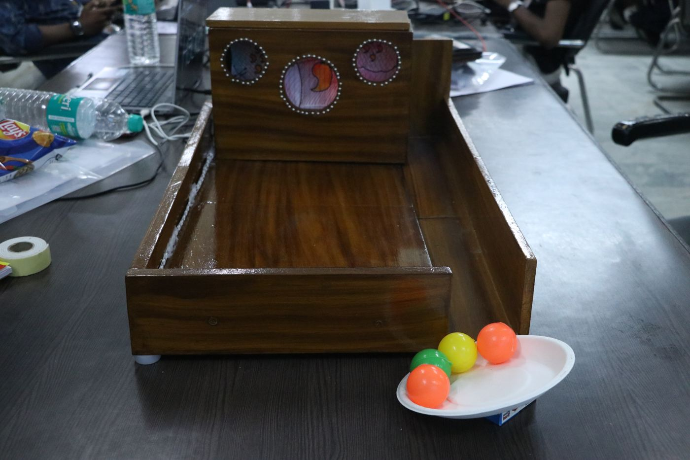
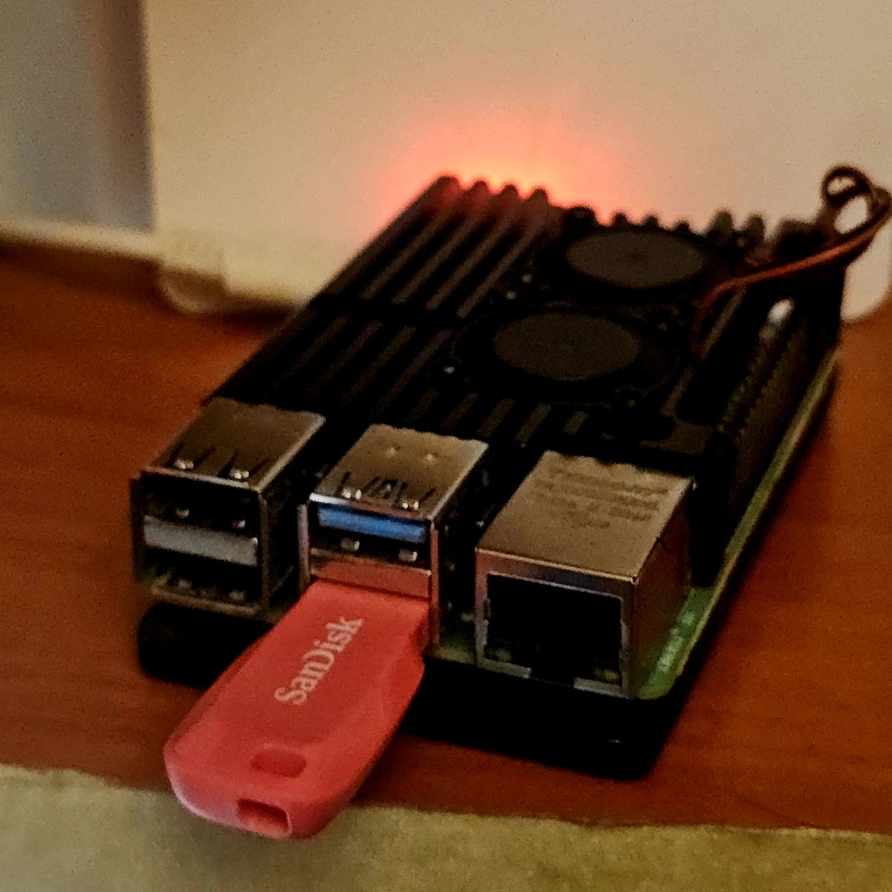

WSTI website
Western Sydney Tech Innovators
The public website of Western Sydney Tech Innovators, built with Astro, with content managed in Sanity.
- Astro
- Sanity
Home / Projects
Ten projects from production work, research and personal builds. Photos are from the original builds.
Showing 10 of 10 projects
Western Sydney Tech Innovators
The public website of Western Sydney Tech Innovators, built with Astro, with content managed in Sanity.

Daily automated routine
A daily cloud routine that updates Notion with event registration counts from Eventbrite and Meetup.

Data pipeline and machine learning
A recommendation engine built from scratch: database schema design, ETL pipeline and a collaborative filtering model with 78% accuracy.

NLP and automation
Automated task categorisation using NLP and sentiment analysis, with a data ingestion pipeline and a classification model.

With Johns Hopkins University
Collaborated with Johns Hopkins University on a mobile healthcare application for symptom tracking and telemedicine. Designed backend data architecture and analytics pipeline. Deployed to 500+ users.

University project
A ground delivery robot with real-time computer vision obstacle detection and NaVIC GPS waypoint navigation on a Raspberry Pi.

Published research paper
Published research on a contactless elevator control system using computer vision and gesture recognition. Built working prototype with real-time image processing and statistical analysis on system accuracy.

Toycathon national winner
National winning project from Toycathon 2021/22. Built IoT-based assistive technology solution with sensor integration, data collection, real-time processing, and dashboard interface. Led a team of three.
Continental Automotive
Production-grade ETL pipelines at Continental processing sensor data from cameras, radar, and lidar. Built job scheduling, error handling, and monitoring dashboards. Reduced manual processing by 95%.

Self-hosted cloud storage
A self-hosted storage and media server on a Raspberry Pi 4 running Linux, Samba and Jellyfin.